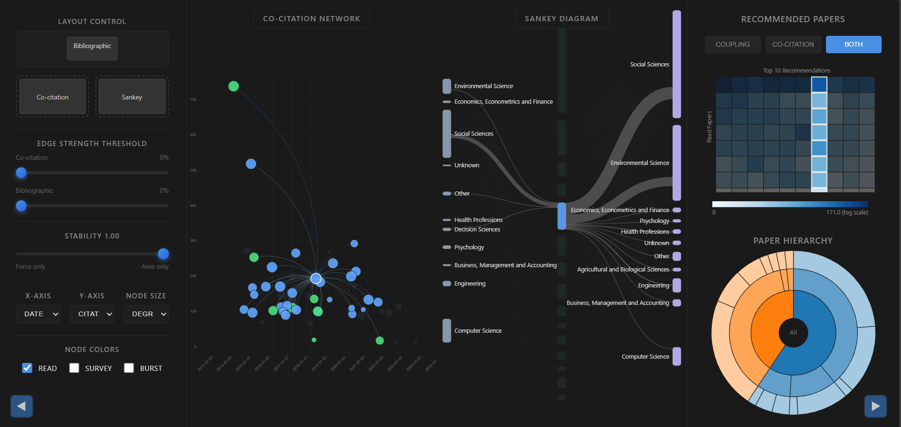
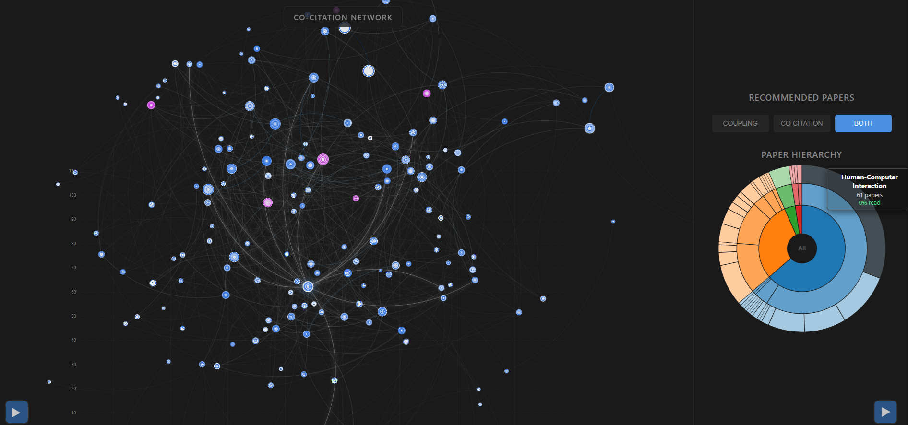

Co-Citation Visualization
Supervised by Emmanuel Pietriga
An exploratory and interactive literature review system revealing shared foundations, topic bridges, citation flows, and which papers may be worth reading next. Using the OpenAlex categorization, a Sankey diagram shows which fields a paper draws on in its references and which fields cite it, representing the flow of knowledge.

Overview
The project begins with 59 papers collected for research on public participatory design. A reproducible Python pipeline resolves their DOIs through OpenAlex, gathers metadata and references, then derives weighted co-citation and bibliographic-coupling graphs for the browser application.
The D3.js interface then shows the papers either as a scatterplot or as a force-directed network. A stability control continuously blends those layouts, allowing users to expose clusters without losing the meaning of axes such as publication date, citation count, field-weighted impact, or research field.
Selection is coordinated across the network, a Sankey view of cited and citing fields, a heatmap that ranks unread papers against the user’s reading history, and a radial hierarchy of domain, field, and subfield. Together, the views support exploratory search rather than presenting another flat bibliography.
Two views of related work
The network can link papers in two complementary ways. With co-citation, two papers are linked when later publications cite them together, which shows how a research community groups earlier work over time. With bibliographic coupling, two papers are linked when they share references, which shows the common foundations they built on when they were published.
